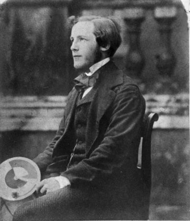

How I Use Emacs org-mode
Table of Contents
1 Initial Setup
For me, org-mode is a document creation system and is the only reason I keep using emacs. In this notes, I am going to explain how I use it to generate documents like this. And maybe in the future, I will also explain how I use it to create LaTeX documents.
Assuming you have emacs installed, you already have org-mode since it comes bundled. The next step is making sure that you completed the tutorial given at the below link since we are going to focus on publishing our documents as a web page:
Publishing to HTML using org-mode
Let me now explain each of the related headers at the beginning of the main org-mode file. In a project, I mainly call this file main.org.
#+TITLE: How I Use Emacs org-mode #+AUTHOR: Burak Kaan \Ccedil opur #+LANGUAGE: en
This in turn, set the title of the document. Names the author as yours truly and sets the document language as English. The next header options customize the HTML output. They are as follows
#+INFOJS_OPT: view:info toc:t ltoc:nil button:t mouse:underline #+INFOJS_OPT: path:../org-info.js #+LINK_HOME: http://burakkaancopur.info #+LINK_UP: http://burakkaancopur.info #+HTML_HEAD: <link rel="stylesheet" type="text/css" href="../orgcss/org.css"/>
Before explaining what each of them does, let me talk about the directory structure of my work environment. I have a top-level folder like ~/org. Here is what it looks like
|-- ~/org | |-- ./orgcss | |-- orginfo.js | |-- ./org-tutorial | |-- ... | |-- ... | |-- a dir for each project
orgcss directory contains the CSS files and relevant styling files I use for my documents. This is taken from this page. In the header
#+HTML_HEAD: <link rel="stylesheet" type="text/css" href="../orgcss/org.css" />
see how I set the CSS file. You can set the directory to your custom CSS file that suits your taste. Notice also that I have a Javascript file called orginfo.js in my directory. This is used to make sure we can view the web page as a GNU Info file and navigate the document as such. For example you can press "n" on your keyboard to go to the next section, "b" button for returning to previous section, "i" displays the table of contents etc. We set this by specifying view:info. The other headers
#+LINK_HOME: http://burakkaancopur.info #+LINK_UP: http://burakkaancopur.info
set where you will go if you click on HOME and UP links on a web page in this info-like document.
This is followed by some LaTeX headers. After this, in the main.org file, I just list each chapter and include that chapter's own file by using
#+INCLUDE: ch1.org
This will import all the contents of ch1.org into main file. With this, when I say M-x org-html-export-to-html, I will get a main.html file that includes all of my document.
2 How to Enrich the HTML Output?
Let's first talk about how to include a link in a document. Here is an example link. This can be inserted using
[[https://www.google.com][link]]
Since I am a programmer, I think I should next talk about including source code listings in a document. Org-mode has environments for various things and we will also talk later about creating our own environments. For source code, we will use src environments. This looks like
#+BEGIN_SRC .. SOURCE CODE GOES HERE #+END_SRC
We will follow with an example listing so that you can see. Note that syntax highlighting depends on htmlize library and you can install this with MELPA package manager of emacs. It should come bundled with newer versions of org-mode though.
int main() { return 0; }
These environments we are talking about are also called special blocks. Another special block is an example block which I am using above as
#+BEGIN_EXAMPLE [[https://www.google.com][link]] #+END_EXAMPLE
when I first talked about links. The next thing we need to be able to add into our document is math of course. We will depend on MathJax for this and it is actually really easy with org-mode.
\begin{align} \mathcal{F}(a) &= \frac{1}{2\pi i}\oint_\gamma \frac{f(z)}{z - a}\,dz\\ \int_D (\nabla\cdot \mathcal{F})\,dV &=\int_{\partial D}\mathcal{F}\cdot n\, dS \end{align}
we just drop our equations as if we are creating \(\LaTeX\) documents. I use following header at main.org to achieve this.
#+HTML_MATHJAX: path: <path-to-MathJax-CDN> #+HTML_MATHJAX: align: left indent: 5em tagside: left font: Neo-Euler
Another thing is to adding figures and images.

Figure 1: Demo Picture with Caption
and this is how to add it
#+LABEL: fig:maxwell #+CAPTION: Demo Picture with Caption [[file:./img/maxwell.jpg]]
I put all my images under ./img directory relative to the project I am working on. We can refer to this image in any place of the text using a link by saying
[[fig:maxwell][a link]
Another important thing is being able to cite other people's work and we need to install an emacs package called org-ref to achieve this. org-ref will let us achieve more than just citations. It is also useful in referencing the parts of our documents like the equation above.
Now we can cite like Shifrin2004.
Note that I can recall and refer to a past equation as Eq-1.1. And we can put labels and refs to any part of the text. Here is the part in the file where we does this.
First, we put label:Eq-1.1 to the top of our LaTeX equation. We can cite like cite:Shifrin2004. Note that I can recall and refer to a past equation as ref:Eq-1.1.
We can also use org-ref for keeping an index but that is for \(\LaTeX\) exports. You can look into that if you are interested.
Bibliography
- [Shifrin2004] Theodore Shifrin, Multivariable Mathematics: Linear Algebra, Multivariable Calculus, and Manifolds, Wiley (2004).
3 Theorems and Proofs
We can use a little CSS trick and org-special blocks to make our theorems, proof etc. look nicely as in a \(\LaTeX\) typesetted book.
If an integer \(n\) is greater than 2, then the equation \(a^n + b^n = c^n\) has no solutions in non-zero integers \(a\), \(b\), and \(c\).
I have a truly marvelous proof of this proposition that this margin is too narrow to contain.
Let me show you how I inserted above theorem and proof. Here is the code and I will explain it.
label:Thm-3.1 #+BEGIN_theorem If an integer $n$ is greater than 2, then the equation $a^n + b^n = c^n$ has no solutions in non-zero integers $a$, $b$, and $c$. #+END_theorem #+BEGIN_proof I have a truly /marvelous/ proof of this proposition that this margin is too narrow to contain. #+END_proof
BEGIN_theorem and BEGIN_proof craetes us a new environment. For \(\LaTeX\)
output, these will be exported into following \(\LaTeX\) environments
\begin{theorem}
If an integer $n$ is greater than 2, then the equation $a^n + b^n = c^n$
has no solutions in non-zero integers $a$, $b$, and $c$.
\end{theorem}
\begin{proof}
I have a truly \emph{marvelous} proof of this proposition that this
margin is too narrow to contain.
\end{proof}
For HTML export, we will get different div classes as shown below
<div class="theorem"> ... </div>
<div class="proof"> ... </div>
With this, we can add a couple of CSS code to our main CSS style so that we can give theorems, proofs etc. the desired look. Here is the CSS additions I used, you can change things to your liking.
.theorem { margin-top: 1em; display: block; font-style:normal; border: 1px solid black; border-radius: 5px; padding-top: 10px; padding-right: 10px; padding-bottom: 10px; padding-left: 10px; } .theorem:before { content: "Theorem. "; font-weight: bold; font-style: normal; } .lemma { margin-top: 1em; display: block; font-style:normal; border: 1px solid black; border-radius: 5px; padding-top: 10px; padding-right: 10px; padding-bottom: 10px; padding-left: 10px; } .lemma:before { content: "Lemma. "; font-weight: bold; font-style: normal; } .proof { margin-top: 1em; display: block; font-style: normal; margin-bottom: 1em; border:1px solid black; border-radius: 5px; padding-top: 10px; padding-right: 10px; padding-bottom: 24px; padding-left: 10px; } .proof:before { content: "Proof. "; font-style: italic; } .proof:after { content: "\25FC"; float:right; } .definition { margin-top: 1em; display: block; font-style:normal; border: 1px solid black; border-radius: 5px; padding-top: 10px; padding-right: 10px; padding-bottom: 10px; padding-left: 10px; } .definition:before { content: "Definition. "; font-weight: bold; font-style: normal; }
Noticed at the top how I started my theorem with an org-ref label? HTML export is not as good as \(\LaTeX\) when it comes to automatic numbering and referencing of things like equations, proofs etc. but with a little discipline, we can be quite functional. Here, for example, I can refer to my theorem as Thm-3.1.
Here is a definition example.
Uniform Continuity
Suppose \(D \subset \mathbf{R}^n\) and \(\vec f: D \to R^m\). We say \(\vec f\) is \(\textit{uniformly}\) continuous if given any \(\epsilon > 0\), there is a single \(\delta > 0\) so that whenever \(\vec y \in B(\vec x, \delta)\), then \(\vec f(\vec y) \in B(\vec f(\vec x), \epsilon)\), for all \(\vec x \in D\).
Please note that the above inequality must hold for all \(\vec x\) in the domain and \(\delta\) depends only on \(\epsilon\).
We also have support for lemmas and that's all for now!